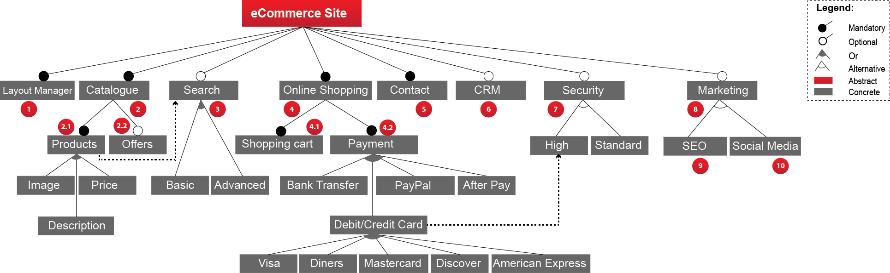

Methodology
The case study presented in our proposal corresponds to a software products line in eCommerce websites on Wordpress.
To build the interactive feature model that is presented in the menu "Case study applied to the eCommerce web site" of RESDEC we have followed a systematic process, which goes from the searching of eCommerce websites developed on Wordpress,
the plugins that have been implemented, the identification of features and the mapping of the plugins to each of them.
The process consisted of 6 phases:
- Searching of eCommerce Websites: As a first step, a search of the websites that have been developed on Wordpress was made, specifically those of eCommerce type, discarding the sites that do not correspond to this
category. For this process, we looked for success cases of companies whose websites have been designed on this platform. As the first searching criteria, we considered the showcase published on the official Wordpress site (www.wordpress.org)
where we obtained a list of 7 websites, then we searched throughout the ranking of websites of the last 4 years, sites developed on Wordpress that are currently working. This search resulted in a total of 25 sites. Fig 1. shows
the final list of websites obtained as a result of this process.
- Implemented plugins Identification: Once the list of websites was obtained, the next step was to identify which wordpress plugins are implemented to each one of them. For this process, we used the Wptheme detector
tools (https://www.wpthemedetector.com/) and Wordpress Plugin Checker (http://wppluginchecker.earthpeople.se/) where we obtained a list of plugins for each site. In some cases, we checked the source code of the site to
identify plugins that were not detected by the aforementioned tools. From the list we obtained, we reviewed those that are still valid for their use and discarded those that are no longer supported. The list of final plugins
for each site is shown in Fig. 2.
- Building Features from plugins: With the list of plugins that we obtained in the previous phase, we were able to identify what the possible features of our model will be. This process consisted in classifying
each plugin by category, for example, those used to implement the product catalog, shopping cart, online payments, security controls, among others. The classification by categories of plugins is shown in Fig. 3.
- Feature Model development: Once the plugins are classified by category, we started to build the feature model. Each category became a parent feature of the model, however, in some cases we had to unify categories
to form a single parent feature and in other cases, a category became a sub-feature of a parent feature. Fig. 4 shows the feature model built from the results of the steps described above. The model shows the relationship
between each of the features, as can be seen some relationships are mandatory and others optional; it also shows some restrictions that are considered during the configuration of an eCommerce website.

- Plugin mapping to feature model: With the feature model built, the next step was to map the plugins with each of the features of the model. For this process, we associated to each feature the plugins that
could be used to implement it. Note that in this case (Fig. 5), the same plugin could implement more than one feature, so the association of the same plugin to more than one feature is allowed.
- Interactive Feature Model in RESDEC: To show how recommendations could be obtained from the selection of features corresponding to the developed model, we have implemented in RESDEC an interactive feature
model through which it is possible to select the feature you desired to be implemented, and from this selection, plugins and tags are loaded for the execution of each of the scenarios presented in this work. With this
process, we want to demonstrate the feasibility and scope of our proposal in real implementation environments, in this case in the selection of plugins in a faster way in the development of eCommerce websites.